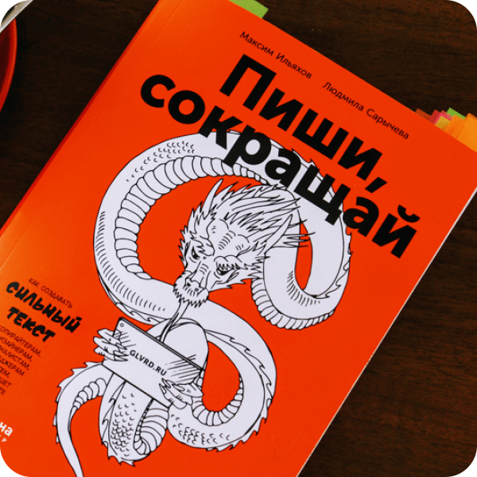

Outside of studying and design I like photography. Sometimes I take my phone and go outside to take some photos, but most of the time I take shots in different racing games. If interested, you can check out a twitter account dedicated to virtual photography.

When it comes to entertainment, I'm not a fan of TV series. I prefer watching anime. My favorite one is OreGairu, but I watch different genres from «slice of life romance» to «psychological terror» ^_^

I am also keen on reading. Thanks to anime, most of the time I read manga or light novels, but sometimes it comes to different educational books and russian classical literature. If you ask me what to read, I'd suggest «A Hero of Our Time» by M. Lermontov.